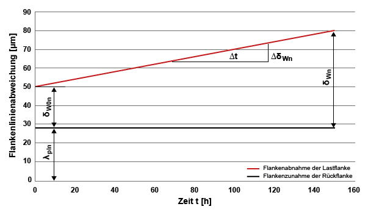

|
|
|


根据Pech方法计算蜗轮的磨损
现在可以根据 Pech [54] 计算交叉斜齿轮的磨损。该过程计算塑料蜗轮的塑性变形、磨损程度以及总磨损（在工作节径的法向截面上）。以下限制适用于此计算：
- 具有90° 轴交角的圆柱蜗杆-蜗轮副
- 润滑脂润滑
- 无载荷谱计算
- 蜗杆材料：钢
- 蜗轮材料：POM, PEEK, PEEK+30% CF 或 PA46
- 主动齿轮：蜗杆
使用 KISSsoft 还可以进行塑料/塑料组合的计算，但这些计算受特殊假设和限制（见下文）。
从材料 DAT 文件中读取的摩擦系数（COF）对计算没有影响（COF 根据 Pech 计算）。计算塑料/塑料组合时使用（用户定义的）COF（选择「」）。
齿根温度和齿面温度的条目对钢/塑料组合的计算没有影响（温度根据 Pech 计算）。塑料/塑料组合使用用户定义的温度。塑料/塑料组合的润滑脂温度按两个齿轮齿根温度的平均值计算。
蜗轮的齿面粗糙度会影响计算出的摩擦系数。粗糙度越大，磨损量越大。
点击「」输入允许塑性变形量的系数（「」）。
如果在 KISSsoft 材料数据库中输入自己的材料，必须在材料 .dat 文件中输入附加数据（例如对于 PEEK）。
塑料材料类型
-- 值：0-不在列表中、1-POM、2-PEEK、3-PEEK+30%CF、4-PA46、5-PA66
-- 6-PA6, 7-PA66+GF, 8-PPS, 9-PPS+GF, 10-PA12, 11-PBT, 12-PET
:TABLE FUNCTION MaterialType
INPUT X None TREAT LINEAR
DATA
0
2
END
下表显示了根据Pech计算磨损的参数限值。
| 齿数：蜗轮 | 16 ≤ Z2 ≤ 80 |
| 中心距 | 10 mm ≤ a ≤ 80 mm |
| 轴向模数：蜗轮 | 0.5 mm ≤ mx ≤ 3 mm |
| 齿数比 | 10 ≤ u ≤ 80 |
| 压力角 | 10° ≤ an ≤ 22° |
| 变位系数：蜗轮 | -0.2 ≤ x2 ≤ 1.5 |
表19.2：根据Pech计算蜗轮磨损的几何极限值
齿线偏差随时间在载荷和非载荷齿面上的变化，根据Pech可参见下图。

图19.4：根据Pech计算载荷齿面（减小）和非载荷齿面（增大）的齿线偏差发展。
Calculating wear on worm wheels according to Pech
A calculation for determining the wear on crossed helical gears according to Pech [54] is now available. This process calculates the plastic deformation, the degree of wear and the overall wear (in the normal section on the operating pitch diameter) of plastic worm wheels. The following restrictions apply to this calculation:
- Cylindrical worm wheel pair with an axial crossing angle of 90°
- Grease lubrication
- Calculation without load spectrum
- Material of worm: Steel
- Material of worm wheel: POM, PEEK, PEEK+30% CF or PA46
- Driving gear: Worm
Using KISSsoft, you can also perform calculations for plastic/plastic combinations, but these are subject to special assumptions and limitations (see below).
The coefficient of friction (COF) taken from the material DAT file has no effect on the calculation (the COF is calculated according to Pech). A (user-defined) COF is used to calculate plastic/plastic combinations (select ).
The entries for the root temperature and flank temperature have no effect on the calculation of steel/plastic combinations (temperatures are calculated according to Pech). User-defined temperatures are used for plastic/plastic combinations. The grease temperature for plastic/plastic combinations is calculated as the mean value of the root temperatures of the two gears.
The flank roughness of the worm wheel has an effect on the calculated coefficient of friction. A greater level of roughness causes a greater amount of wear.
Click on to input a coefficient for the permitted level of plastic deformation ().
If you input your own material in the KISSsoft material database, you must enter additional data in the material .dat file (for example for PEEK).
-- Type of plastic material
-- Values: 0-not on the list, 1-POM, 2-PEEK, 3-PEEK+30%CF, 4-PA46, 5-PA66,
-- 6-PA6, 7-PA66+GF, 8-PPS, 9-PPS+GF, 10-PA12, 11-PBT, 12-PET
:TABLE FUNCTION MaterialType
INPUT X None TREAT LINEAR
DATA
0
2
END
The table below shows the parameter limits for calculating wear according to Pech.
| Number of teeth: Worm wheel | 16 ≤ Z2 ≤ 80 |
| Center distance | 10 mm ≤ a ≤ 80 mm |
| Axial module: Worm wheel | 0.5 mm ≤ mx ≤ 3 mm |
| Gear ratio | 10 ≤ u ≤ 80 |
| Pressure angle | 10° ≤ an ≤ 22° |
| Profile shift coefficient: Worm wheel | -0.2 ≤ x2 ≤ 1.5 |
Table 19.2: Geometry limit values for calculating wear according to Pech
The progression of the tooth trace deviation over time on the loaded and unloaded flank, according to Pech, can be seen in the next figure.
Figure 19.4: Figure: Development of tooth trace deviation on the loaded flank (decrease) and the unloaded flank (increase) according to Pech.